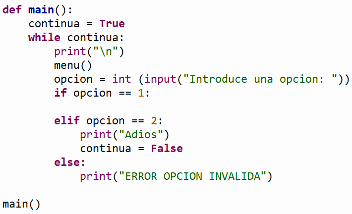

50
factores_de(39) desplegará en pantalla:
Factores de 39
1
3
13
-
La función
secuencia_descendente(N)
que recibe un valor entero N positivo y realiza la siguiente
secuencia: si el número es par, dividirlo entre 2; si es non,
multiplicarlo por 3 y sumarle 1. Repetir lo anterior hasta que el
valor sea 1, imprimiendo en pantalla cada valor intermedio. Al
final del proceso, también se deberá imprimir cuantas operaciones
(pasos) se realizaron para llegar a 1.
Por ejemplo:
secuencia_descendente( 3 )
desplegará en pantalla:
El valor inicial es 3
El siguiente valor es 10
El siguiente valor es 5
El siguiente valor es 16
El siguiente valor es 8
El siguiente valor es 4
El siguiente valor es 2
El siguiente valor es 1
Valor final 1, numero de pasos 7
secuencia_descendente( 9 )
desplegará en pantalla:
El valor inicial es 9
El siguiente valor es 28
El siguiente valor es 14
El siguiente valor es 7
El siguiente valor es 22
El siguiente valor es 11
El siguiente valor es 34
El siguiente valor es 17
El siguiente valor es 52
El siguiente valor es 26
El siguiente valor es 13
El siguiente valor es 40
El siguiente valor es 20
El siguiente valor es 10
El siguiente valor es 5
El siguiente valor es 16
El siguiente valor es 8
El siguiente valor es 4
El siguiente valor es 2
El siguiente valor es 1
Valor fina1 1, numero de pasos 19
-
Como los inversionistas saben, existen cuentas e inversiones que
manejan lo que se llama interés compuesto. Esto quiere decir que
los intereses se suman al saldo de una cuenta mes con mes con el
saldo existente y no con el saldo base. Implementa la función
interes_compuesto (saldo, meses, interes)
que recibe el saldo base, el número de meses que dure la inversión
y el % de interes mensual, y despliegue la tabla con el formato que
se muestra a continuación:
Por ejemplo:
-
Saldo: 100000
-
Numero de meses a calcular: 5
-
% de interes mensual: 10
interes_compuesto(100000, 5, 10)
Saldo Interes Total
Mes 1: 100000 + 10000 = 110000
Mes 2: 110000 + 11000 = 121000
Mes 3: 121000 + 12100 = 133100
Mes 4: 133100 + 13310 = 146410
Mes 5: 146410 + 14641 = 161051
-
La función
menu()
que despliegue el siguiente menú en pantalla:
1. Factores de
2. Secuencia
descendente
3. Interés compuesto
4.
Salir
-
La función
main()
que utilice la función menu para desplegar el menú
correspondiente y de acuerdo a la opción seleccionada por el
usuario le dé la oportunidad de ejecutar cualquiera de las
funciones que han sido construidas. Utiliza el estatuto de control
if anidado.
Recuerda que la
captura de datos debe ser realizada en la sección del main. Debes
utilizar el ciclo while para que se cicle el
programa hasta que el usuario introduzca la opción de salir.
-
En el
script principal
manda llamar a la función main.
-
Guarda tu archivo como:
repaso1_matricula.py
